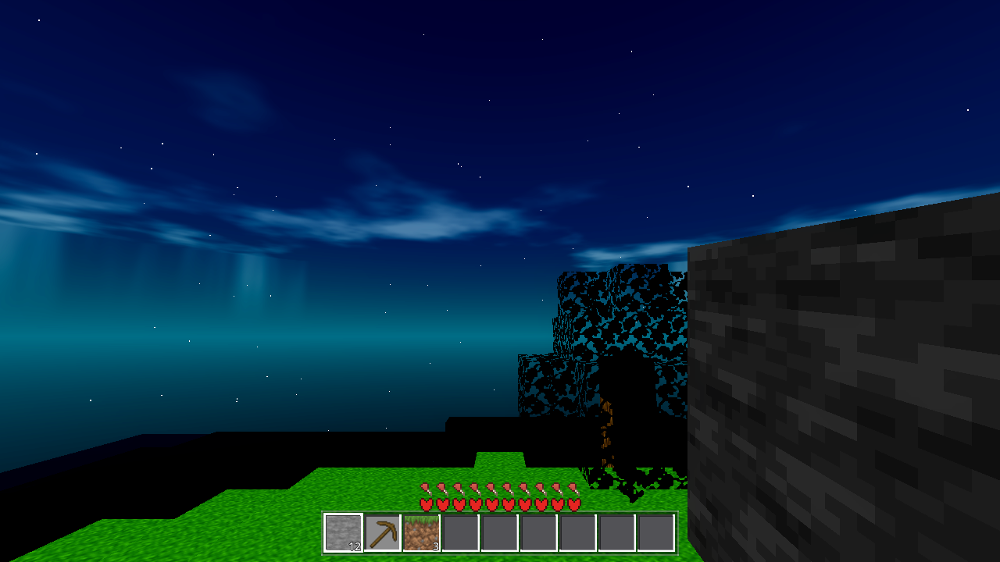

godot/scenes/main.gd (one-line fix + probe) + godot/core/star.gdshader (vertex stage).The Stars node was already a child of the world root (parent was never the bug) — the per-frame hook at main.gd:1576 copied the camera's full transform (global_transform = scam.global_transform) instead of its position, and star.gdshader compensated with a local-space quad offset — so the r=320 star sphere's world orientation rotated in lockstep with the camera and every star stayed on the same screen pixel: "dead pixels".
The frozen web (index.html build 20260816-r12) does the opposite: the star field is a THREE.Points at the scene root (:729) with absolute r=320 coordinates (mulberry32(42), :720-726), and the ONLY per-frame write is index.html:3248 — window.__stars.position.copy(camera.position) (position-only copy; the node's rotation is never written anywhere in the file — grep-verified, exactly 5 __stars refs :727/:728/:729/:1347/:3248). Consequence: the field is fixed in world orientation and recentered on the eye — under camera yaw the field rotates in the view (different stars come into view, "scroll with the sky"); under walking it follows the eye 1:1 (no parallax). The fix restores exactly this.
# godot/scenes/main.gd _update_sky() — :1576, one-liner (surrounding null-guards kept):
# - _star_node.global_transform = scam.global_transform
# + _star_node.global_position = scam.global_position # web :3248 parity, position copy ONLY
# godot/core/star.gdshader — vertex stage (world-space camera-basis billboard;
# mesh data, u_opacity, render_mode, fragment stage UNCHANGED):
void vertex() {
vec3 w = (MODEL_MATRIX * vec4(VERTEX, 1.0)).xyz; // star center, world space
mat3 v = mat3(VIEW_MATRIX);
vec3 cam_right = transpose(v) * vec3(1.0, 0.0, 0.0); // row 0 of the view rotation = camera right (world)
vec3 cam_up = transpose(v) * vec3(0.0, 1.0, 0.0); // row 1 = camera up (world)
vec3 off = (cam_right * (UV.x - 0.5) + cam_up * (UV.y - 0.5)) * quad_size;
VERTEX = w + off - MODEL_MATRIX[3].xyz; // back to node-local (basis = identity, origin = eye)
}
Why it works: with the node basis left at identity (rotation never written, parent "Main" identity), the star centers stay at their baked r=320 world-space offsets from the eye; the quad corner is offset along the camera's world-space right/up basis extracted from VIEW_MATRIX (row 0/row 1 of the view rotation = camera right/up in world), so every quad faces the camera in world space — the same screen-aligned quad the web's PointsMaterial(sizeAttenuation:false) draws. Distribution untouched (500 × mulberry32(42), r=320, mesh builder byte-identical). u_opacity = 1 − day untouched.
RESULT {"count":500,"elapsed_ms":0,"eye_a":[8.5,36.6199989318848,8.5],"eye_b":[8.5,36.6199989318848,8.5],"mode":"stars","ok":false,"opacity_a":1.0,"parent_name":"Main","path":"/root/Main/Stars","seed":44,"star_pos_a":[8.5,36.6199989318848,8.5],"star_pos_b":[8.5,36.6199989318848,8.5],"star_rot_a":[0.0,0.0,0.0],"star_rot_b":[0.0,90.0,0.0],"yaw_delta_deg":90.0}
Fails exactly the rotation check: after the 90° camera yaw the field's world rotation is [0,90,0] (basis angle 90° > 1°) — the star field rotates with the camera = screen-fixed = the user's dead pixels. Parent ("Main", not a camera) and position (star_pos == eye at both samples) pass PRE, as the plan pinned: the parent was never the bug, the discriminating check is rotation.
RESULT {"count":500,"elapsed_ms":0,"eye_a":[8.5,36.6199989318848,8.5],"eye_b":[8.5,36.6199989318848,8.5],"mode":"stars","ok":true,"opacity_a":1.0,"parent_name":"Main","path":"/root/Main/Stars","seed":44,"star_pos_a":[8.5,36.6199989318848,8.5],"star_pos_b":[8.5,36.6199989318848,8.5],"star_rot_a":[0.0,0.0,0.0],"star_rot_b":[0.0,0.0,0.0],"yaw_delta_deg":90.0}
ok:true — the field does NOT rotate when the camera yaws 90° (basis 0.0° at both samples), position tracks the eye (Δ 0.0 < 0.01) at both samples, opacity 1.0 @ night, count 500. Both runs rc 0, 0 SCRIPT ERROR, probe wall < 60 s (sync, no world settle).
| gate | result |
|---|---|
G0 headless --quit | PASS — rc 0, 0 SCRIPT ERROR (PRE and POST trees). |
| G1-PRE stars probe | PASS (as designed: ok:false on rotation) — verbatim above; recorded in continuity.md. |
| G1-POST stars probe | PASS (ok:true) — verbatim above. |
| G2 viewlight re-pass | PASS EXACT — star {"present":true,"count":500,"opacity_noon":0.0,"opacity_midnight":1.0}; cave0 0.41333 (vm_no_pl 0.12), outdoor 1.0, torch 0.94133, player_light d0 0.41333 @ level 5, surface [2,32,2], pocket [0,25,-4], ok:true, rc 0, 0 SCRIPT ERROR — byte-identical to the AC-0035 gate values (the probe reads only u_opacity + presence, never the transform). |
G3 SMOKE player;interact | PASS EXACT — player 2.82 / 36.43 / on_floor true; interact breakable 2 / drop_spawned true / place_ok true; battery ok:true, rc 0, 0 SCRIPT ERROR. No genhash (no world/*|data.gd touched), no boundary/perf (tier = SMOKE only). |
| G4 RENDER (≤1 final) | PASS — one night R=1 eyeup render → tasks/AC-0133/stars_night.png; rc 0, 0 shader/error lines; star dots visible across the sky (image below). See §5 for the one in-budget shader fix between throws. |
Render throw 1 (the shipped plan §5.2 verbatim shader): SHADER ERROR: Invalid arguments for the built-in function: "vec3(vec4)" at vec3(MODEL_MATRIX[3]) — this 4.7.1 shading language rejects the vec4→vec3 constructor; stars failed to render (146 KB PNG, broken). Fixed within plan §5.2's design (same math, swizzle instead of constructor: MODEL_MATRIX[3].xyz) → throwaway compile-check render (scratch path, 0 shader/error lines) → final render to the task path (239 KB, clean log). Net: one final G4 render on the final shader, per plan §7 row 2. Note: the first render log also carried the known transient threadgen_handoff world.gd flake (documented in AC-0035 continuity; world/* untouched by this task) — it does not appear in the final render log.
Stars as small screen-facing dots across the sky, fading with the night gradient toward the horizon — dots, not streaks, not missing. This is the GL check of the new vertex shader (headless is blind to spatial shaders).

| file | change |
|---|---|
godot/scenes/main.gd | (1) the one-line fix in _update_sky() (global_transform → global_position, with the web-parity comment); (2) the new AWECRAFT_LOGIC=stars probe branch after the viewlight branch; (3) _stars_test(spawn) + _star_basis_deg(n) appended beside the viewlight probe block. Probe API notes (engine 4.7.1, parse-only deviations from the plan's pseudocode): basis angle via trace acos((tr(R)−1)/2) (no Quaternion.angle_to/deg() in this build; Euler-free, same measure), mesh arrays via surface_get_arrays(0). |
godot/core/star.gdshader | Vertex stage → world-space camera-basis billboard (§2); header comment rewritten for the fixed design. render_mode, both uniforms, fragment stage byte-identical. |
Untouched (verified by git status/diff --stat): _build_star_mesh + mulberry helpers (distribution byte-identical), star node creation, viewlight probe, player.gd, world/*, lighting.gd, data.gd, index.html, docs/halo-loot-brainstorm.html (foreign). No git ops in Run-2. No build_windows.sh (coordinator's heavy job).
vec3(MODEL_MATRIX[3]) → MODEL_MATRIX[3].xyz swizzle (4.7.1 shading language, identical math) — GL-verified by the night render (star dots, not streaks).